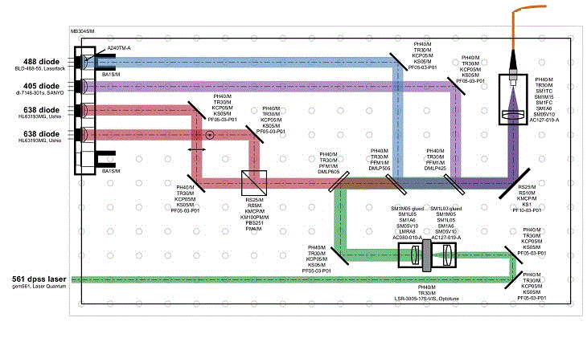

An open-source combiner for inexpensive laser diodes

Scientific-grade lasers are incredibly costly components of modern microscopes. Inexpensive laser diodes are much cheaper, often less than $100, but they have high divergence and an asymmetrical intensity profile, which makes them difficult to efficiently couple into single-mode optical fibers. Instead, they are coupled into multimode fibers, which results in the appearance of laser speckles that need to be smudged out by perturbing the speckle pattern faster than the camera frame rate.
Daniel Schröder, Joran Deschamps, Anindita Dasgupta, Ulf Matti, and Jonas Ries have a paper detailing how to build such a device a cost-efficient open-source laser engine based off such diode lasers for microscopy.
The paper states that optical components will cost $3000. This price tag excludes electronics, a commercial speckle reducer they use, 3D printed parts, and a commercial solid-state laser they use. If you're interested, the real details are on the projects GitHub which provides parts, descriptions, CAD files, and tutorials on how to assemble the device.